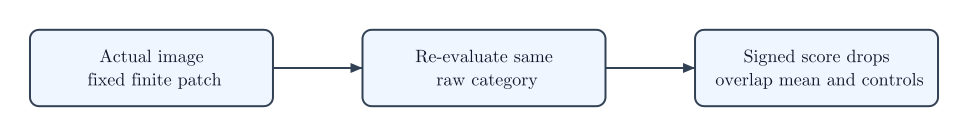
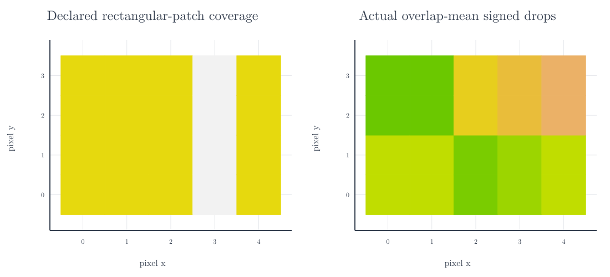
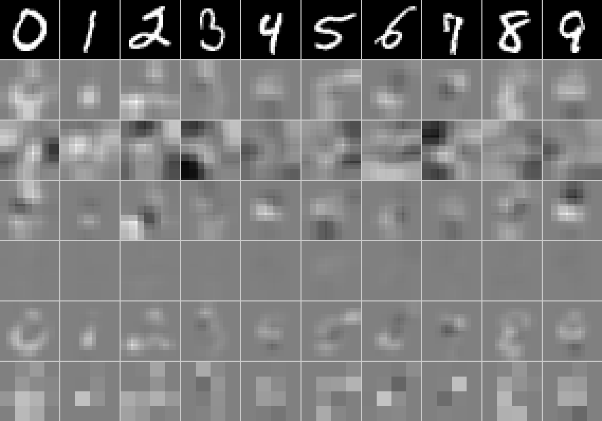
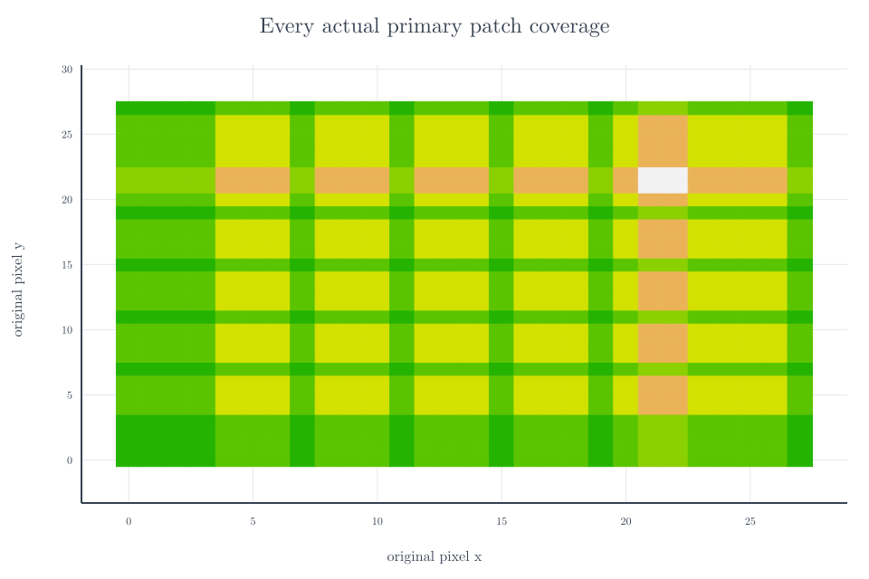
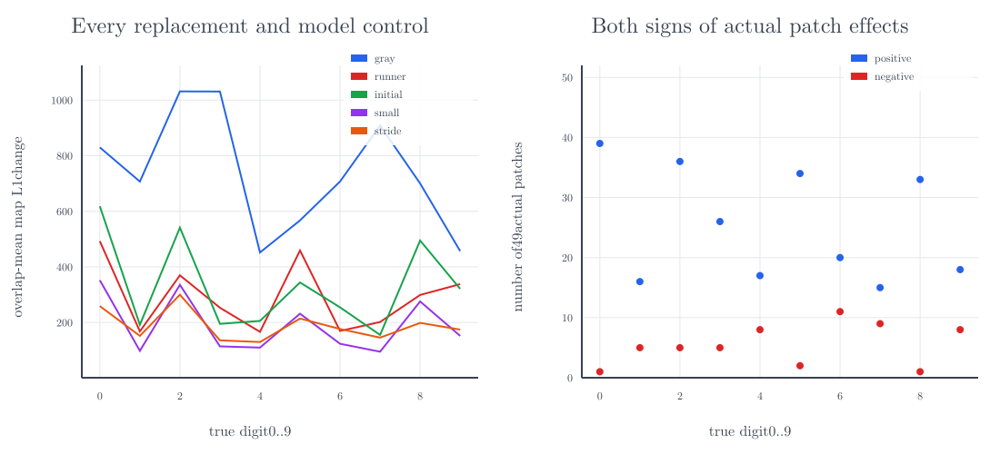

Occlusion sensitivity:actual finite patches and overlap accounting
Abstract
An image classifier may change its score when a visible region is replaced. Evaluate every actual rectangular replacement on genuine MNIST images,retain signed fixed-category score changes,and show explicit edge coverage and replacement,patch,target and weight controls.
Source example: examples/cpp/source/nn/1_convolutional_neural_networks/1.11_interpretability/occlusion_sensitivity.cpp.
The method
For patchR,replacementr and fixed raw score s_c,measure the finite change directly. Project the patch measurements onto pixels by averaging all covering patch drops:
Coverage is positive everywhere because boundary anchors are explicit and stride never exceeds patch size. No derivative,learned explainer or optimizer replaces the actual frozen-model predictions. The model fitting loop remains explicit in vanilla_saliency.
The concept diagram below is drawn by dm::graphics::Diagram. Its editable C++
source is the complete block below; regeneration uses the same datamunge toolchain
as the numerical examples. Exports consume the saved local SVG.
#include <dm/dm.hpp>
int main() {
std::filesystem::create_directories("build");
dm::graphics::Diagram diagram;
diagram.node("n0", {0.0, 0}, "Actual image\n fixed finite patch");
diagram.node("n1", {5.2, 0}, "Re-evaluate same\n raw category");
diagram.node("n2", {10.4, 0}, "Signed score drops\n overlap mean and controls");
diagram.edge("n0", "n1").edge("n1", "n2");
diagram.save_svg("build/occlusion_sensitivity_concept.svg");
}
Frozen original observations and finite interventions
Restore the validation-selected MNIST classifier from [vanilla saliency](vanilla_saliency.mepml),whose96tensor Adam updates and200 held-out errors are visible. There is no new fitting in this report. Use the same first actual held-out image of each true digit0..9,original source IDs and fixed learned top/runner categories. The shared classifier has88%held-out accuracy and24mistakes;an occlusion map does not correct those predictions.
Replace a specified rectangle with pixels from a specified replacement image, then re-evaluate the SAME fixed raw category. Positive drop means replacement lowered the score;negative drop means it raised the score. Keep both signs. The intervention has finite size and is not an input derivative. Replacement, patch shape and stride define the question;black and grey patches can differ.
Executed tensor architecture
The diagram shows the forward MNIST CNN that the attribution or feature-optimization method inspects; the attribution algorithm is explained separately.
This figure executes the inference configuration shown in the code, using a zero-valued shape probe without fitting or loading a checkpoint. Named stage boundaries group whole subgraphs where available; other nodes retain functional-layer detail. Exact batch-inclusive shapes and reachable parameter totals come from the trace. Shared linear scales map spatial dimensions and channel counts to blocks; the one-pixel visibility floor is disclosed in the legend. Labels use compact monospace text, rotate counterclockwise and sit beside their own glyphs. Arrows flow left to right; wide diagrams scroll at native size on the website.
#include <dm/dm.hpp>
int main() {
namespace n = dm::nn;
namespace m = n::models;
n::set_num_threads(2);
std::filesystem::create_directories("build");
n::ParameterStore p(1103);
n::Module architecture_model(
[&](const n::Tensor& image) { return m::SaliencyCnn(p, image).logits; },
"Occlusion sensitivity:actual finite patches and overlap accounting");
n::ModelPlotOptions options;
options.style = n::ModelPlotStyle::Flow;
options.detail = n::ModelPlotDetail::Blocks;
options.labels = {.type = n::ModelPlotLabel::NameAndShape, .size = 12, .wrap = 24};
options.spacing = {.layer = 24, .lane = 12, .label = 8, .margin = 20};
options.sizing.spatial_size = 96;
options.sizing.channel_size = 42;
options.sizing.minimum_extent = 1;
options.opacity = .8;
const auto diagram = architecture_model.plot(n::zeros({1, 28, 28, 1}), options);
diagram.save_svg("build/occlusion_sensitivity_architecture.svg");
std::print(
"{} displayed nodes; {} reachable learned values.\n",
diagram.nodes().size(),
diagram.parameter_count());
}12 displayed nodes; 26826 reachable learned values.

Rectangular edge anchors and exact overlap accounting
For a4x5image,2x2patch and2x2stride,the horizontal starts are0,2,3:append3to cover the otherwise missed right edge. Six rectangles cover every pixel;some pixels belong to two rectangles. The reported pixel map averages signed drops of all covering patches. It is a projection of patch measurements,not an additive decomposition of the score into individual pixel contributions.
#include <dm/dm.hpp>
int main() {
namespace n = dm::nn;
namespace m = n::models;
const auto x = (n::arange(0, 40) * .02 + .1).reshape({2, 4, 5, 1}),
replacement = n::full(x.shape(), .2),
kernel = (n::sin(n::arange(0, 20) * .7) * .1).reshape({1, 4, 5, 1});
const auto target = n::from_vector(std::vector<int>{0, 1});
auto predict = [&](const n::Tensor &p) {
const auto s = n::sum(p * kernel, {1, 2, 3}) + .3;
return n::stack({s, -s}, 1);
};
const auto out = m::OcclusionSensitivity(x, replacement, target, {2, 2, 2, 2}, 3, predict);
std::print(
"Every actual rectangle {},coverage {},all12signed drops {},all40overlap means {}.\n",
out.rectangles, out.coverage, out.drops, out.pixel_mean);
const auto peak = n::max(n::abs(out.pixel_mean)).item();
auto a = n::plot_tensor_map(n::reverse(out.coverage, {0}), 0, 2),
b = n::plot_tensor_map(n::reverse(n::select(out.pixel_mean, 0, 0), {0}), -peak, peak);
a.title("Declared rectangular-patch coverage").x_label("pixel x").y_label("pixel y");
b.title("Actual overlap-mean signed drops").x_label("pixel x").y_label("pixel y");
auto layout = dm::graphics::RLayout::create(1, 2);
layout.add(a).add(b).size(1100, 500).fit_panels().save_svg(
"build/occlusion_sensitivity_fixture.svg");
}Every actual rectangle int32[6, 4] [[0, 0, 2, 2], [0, 2, 2, 2], [0, 3, 2, 2], [2, 0, 2, 2], [2, 2, 2, 2], [2, 3, 2, 2]],coverage int32[4, 5] [[1, 1, 1, 2, 1], [1, 1, 1, 2, 1], [1, 1, 1, 2, 1], [1, 1, 1, 2, 1]],all12signed drops float64[6, 2] [[-0.00689688, 0.0300226], [-0.0170829, 0.00768536], [-0.0077759, -0.0155739], [-0.0207079, 0.0292567], [0.00310886, -0.0266762], [0.0181311, -0.0443636]],all40overlap means float64[2, 4, 5] [[[-0.00689688, -0.00689688, -0.0170829, -0.0124294, -0.0077759], [-0.00689688, -0.00689688, -0.0170829, -0.0124294, -0.0077759], [-0.0207079, -0.0207079, 0.00310886, 0.01062, 0.0181311], [-0.0207079, -0.0207079, 0.00310886, 0.01062, 0.0181311]], [[0.0300226, 0.0300226, 0.00768536, -0.00394425, -0.0155739], [0.0300226, 0.0300226, 0.00768536, -0.00394425, -0.0155739], [0.0292567, 0.0292567, -0.0266762, -0.0355199, -0.0443636], [0.0292567, 0.0292567, -0.0266762, -0.0355199, -0.0443636]]].

All eight real-image intervention configurations
Primary7x7patches with stride4append the21pixel edge anchor,forming49windows. Compare grey.5replacement,runner-up category,actual-initial weights,5x5/stride3, 7x7/stride7,identity replacement and full-image black replacement. Each variant runs actual predictions on all its modified images. A larger window count is not more independent data;overlapping windows share original pixels.
All model inputs,replacements,masks,score subtraction and overlap averaging use tensors. RawFloat32scores subtract inDouble. Identity replacement has ideal zero drop;small nonzero Float32differences from different prediction batch sizes are reported with1e-5tolerance. Full replacement must match the actual replacement-image prediction. The actual primary experiment gives276positive,154negative and60zero drops. Identity maximum2.86102295e-6and single/batch maximum3.81469727e-6remain within the stated numerical tolerance;full replacement agrees exactly with its actual baseline prediction.
No synthetic noise or derivative proxy substitutes for the actual counterfactual inputs.
#include <dm/dm.hpp>
int main() {
namespace n = dm::nn;
namespace m = n::models;
n::set_num_threads(2);
std::filesystem::path cache;
if (const auto *p = std::getenv("DATAMUNGE_DATA_DIR"))
cache = p;
else if (const auto *p = std::getenv("XDG_CACHE_HOME"))
cache = std::filesystem::path(p) / "datamunge/datasets";
else
cache = std::filesystem::path(std::getenv("HOME")) / ".cache/datamunge/datasets";
dm::datasets::prepare_example_data("mnist-assets", cache.string());
const auto pools = m::LoadSaliency(cache / "saliency");
const auto &fit = pools[0];
const auto &validation = pools[1];
const auto &test = pools[2];
n::ParameterStore p(1103);
{
n::NoGradGuard guard;
m::SaliencyCnn(p, n::zeros({1, 28, 28, 1}));
}
auto predict = [&](const n::Tensor &images) {
n::NoGradGuard guard;
std::vector<n::Tensor> parts;
for (std::int64_t start = 0; start < images.size(0); start += 32)
parts.push_back(
m::SaliencyCnn(p, n::slice_axis(images, 0, start,
std::min<std::int64_t>(start + 32, images.size(0))))
.logits);
return n::concat(parts, 0);
};
for (const auto &[key, value] : n::load_npz("build/vanilla_saliency_best.npz"))
p.set(key, value.clone());
std::vector<std::int64_t> chosen;
const auto labels = test.labels.to_vector<int>();
for (int digit = 0; digit < 10; ++digit) {
const auto it = std::find(labels.begin(), labels.end(), digit);
chosen.push_back(it - labels.begin());
}
const auto examples = m::SaliencyRows(test, chosen);
const auto z = predict(examples.images);
const auto sorted = n::argsort(z, true);
const auto targets = n::select(sorted, 1, 0).to(n::DType::Int32),
runners = n::select(sorted, 1, 1).to(n::DType::Int32);
const auto before = p.flatten();
n::ParameterStore random(1103);
{
n::NoGradGuard guard;
m::SaliencyCnn(random, n::zeros({1, 28, 28, 1}));
}
for (const auto &[key, value] : n::load_npz("build/vanilla_saliency_initial.npz"))
random.set(key, value.clone());
const auto random_before = random.flatten();
auto initial_predict = [&](const n::Tensor &x) {
n::NoGradGuard guard;
return m::SaliencyCnn(random, x).logits;
};
const auto black = n::zeros(examples.images.shape()),
gray = n::full(examples.images.shape(), .5);
std::vector<std::pair<std::string, m::OcclusionOutput>> groups;
groups.push_back({"main", m::OcclusionSensitivity(examples.images, black, targets,
{7, 7, 4, 4}, 32, predict)});
groups.push_back({"gray", m::OcclusionSensitivity(examples.images, gray, targets,
{7, 7, 4, 4}, 32, predict)});
groups.push_back({"runner", m::OcclusionSensitivity(examples.images, black, runners,
{7, 7, 4, 4}, 32, predict)});
groups.push_back({"initial", m::OcclusionSensitivity(examples.images, black, targets,
{7, 7, 4, 4}, 32, initial_predict)});
groups.push_back({"small", m::OcclusionSensitivity(examples.images, black, targets,
{5, 5, 3, 3}, 32, predict)});
groups.push_back({"stride", m::OcclusionSensitivity(examples.images, black, targets,
{7, 7, 7, 7}, 32, predict)});
groups.push_back({"identity", m::OcclusionSensitivity(examples.images, examples.images,
targets, {7, 7, 4, 4}, 32, predict)});
groups.push_back({"full", m::OcclusionSensitivity(examples.images, black, targets,
{28, 28, 28, 28}, 32, predict)});
const auto repeat = m::OcclusionSensitivity(examples.images, black, targets, {7, 7, 4, 4},
32, predict),
single = m::OcclusionSensitivity(
n::slice_axis(examples.images, 0, 0, 1), n::slice_axis(black, 0, 0, 1),
n::slice_axis(targets, 0, 0, 1), {7, 7, 4, 4}, 1, predict);
const auto replay =
n::max(n::abs(groups[0].second.occluded_logits - repeat.occluded_logits)),
batch = n::max(
n::abs(n::select(groups[0].second.drops, 1, 0) - single.drops.reshape({49}))),
identity = n::max(n::abs(groups[6].second.drops));
const auto baseline = m::SaliencyScore(predict(black), targets),
full = n::max(n::abs(groups[7].second.occluded_score.reshape({10}) - baseline));
if (replay.item() != 0 || batch.item() > 1e-5 || identity.item() > 1e-5 ||
full.item() > 1e-6 || before != p.flatten() || random_before != random.flatten())
return 1;
std::print("Replay {},single/batch {:.9g},identity {:.9g},full-baseline "
"{:.9g};all16selected/controlarrays unchanged.\n",
replay.item(), batch.item(), identity.item(), full.item());
n::NamedTensors arrays{{"images", examples.images},
{"source_ids", examples.source},
{"targets", targets},
{"runners", runners}};
auto peak = n::zeros({}, n::DType::Float64);
for (int i = 0; i < 6; ++i)
peak = n::maximum(peak, n::max(n::abs(groups[i].second.pixel_mean)));
std::vector<n::Tensor> display{examples.images};
std::print("| variant | actual patches | coverage min/max | positive drops | negative drops "
"|\n|---|---:|---|---:|---:|\n");
for (const auto &[name, value] : groups) {
for (const auto &[key, tensor] : std::vector<std::pair<std::string, n::Tensor>>{
{"rectangles", value.rectangles},
{"coverage", value.coverage},
{"original_logits", value.original_logits},
{"occluded_logits", value.occluded_logits},
{"original_score", value.original_score},
{"occluded_score", value.occluded_score},
{"drops", value.drops},
{"pixel_mean", value.pixel_mean},
{"occluded_inputs", value.occluded_inputs}})
arrays.push_back({name + "_" + key, tensor});
if (name != "identity" && name != "full")
display.push_back(
n::expand_dims(value.pixel_mean.to(n::DType::Float32) / (peak.item() * 2) + .5, 3));
std::print("| {} | {} | {}..{} | {} | {} |\n", name, value.patches,
n::min(value.coverage).item(), n::max(value.coverage).item(),
n::sum(n::greater(value.drops, 0.).to(n::DType::Int32)).item(),
n::sum(n::less(value.drops, 0.).to(n::DType::Int32)).item());
}
std::print("Actual source IDs {},fixed targets {},runners {}.\n", examples.source, targets,
runners);
n::save_npz("build/occlusion_sensitivity_maps.npz", arrays);
auto plot = n::plot_tensor_map(n::reverse(groups[0].second.coverage, {0}), 0, 9);
plot.title("Every actual primary patch coverage")
.x_label("original pixel x")
.y_label("original pixel y");
plot.save_svg("build/occlusion_sensitivity_coverage.svg");
std::filesystem::copy_file("build/occlusion_sensitivity_coverage.svg",
"figures/occlusion_sensitivity_coverage.svg",
std::filesystem::copy_options::overwrite_existing);
n::save_image_grid(n::concat(display, 0), "build/occlusion_sensitivity_maps.png", 10, 0, 1,
2, .8, 4);
}Replay 0,single/batch 0,identity 0,full-baseline 0;all16selected/controlarrays unchanged.
| variant | actual patches | coverage min/max | positive drops | negative drops |
|---|---|---|---|---|
| main | 49 | 1..9 | 254 | 55 |
| gray | 49 | 1..9 | 313 | 177 |
| runner | 49 | 1..9 | 187 | 122 |
| initial | 49 | 1..9 | 173 | 136 |
| small | 81 | 1..4 | 316 | 78 |
| stride | 16 | 1..1 | 79 | 13 |
| identity | 49 | 1..9 | 0 | 0 |
| full | 1 | 1..1 | 10 | 0 |
Actual source IDs int32[10] [66921, 63380, 68936, 62280, 62094, 65222, 61209, 61721, 69402, 62570],fixed targets int32[10] [0, 1, 2, 3, 9, 5, 6, 7, 8, 9],runners int32[10] [2, 6, 3, 5, 4, 9, 1, 9, 5, 4].


Every case and patch remains inspectable
Compare each actual control's projected map with the primary map and retain all490primary patch/case score drops,all modified images and source identities. The following plots show all ten per-case L1changes and positive/negative drop counts. Changes with replacement,patch geometry,target or weights establish dependence of the experiment;they do not establish causal pixel importance.
#include <dm/dm.hpp>
int main() {
namespace n = dm::nn;
std::map<std::string, n::Tensor> a;
for (const auto &[key, value] : n::load_npz("build/occlusion_sensitivity_maps.npz"))
a.emplace(key, value);
auto left = dm::graphics::RPlot::create(), right = dm::graphics::RPlot::create();
const std::vector<std::string> names{"gray", "runner", "initial", "small", "stride"};
const std::vector<dm::graphics::RGB> colors{
{37, 99, 235}, {220, 38, 38}, {22, 163, 74}, {147, 51, 234}, {234, 88, 12}};
std::print("| control | all ten per-case projected-map L1changes |\n|---|---|\n");
for (int i = 0; i < 5; ++i) {
const auto delta =
n::sum(n::abs(a.at("main_pixel_mean") - a.at(names[i] + "_pixel_mean")), {1, 2});
std::print("| {} | {} |\n", names[i], delta);
left.lines(n::arange(0, 10).to_vector<double>(), delta.to_vector<double>(), names[i],
colors[i]);
}
const auto positive = n::sum(n::greater(a.at("main_drops"), 0.).to(n::DType::Int32), {0}),
negative = n::sum(n::less(a.at("main_drops"), 0.).to(n::DType::Int32), {0});
right
.points(n::arange(0, 10).to_vector<double>(), positive.to_vector<double>(), "positive",
{37, 99, 235})
.points(n::arange(0, 10).to_vector<double>(), negative.to_vector<double>(), "negative",
{220, 38, 38});
std::print("\n| primary patch | top,left,height,width | all ten fixed-category drops "
"|\n|---:|---|---|\n");
for (int patch = 0; patch < 49; ++patch)
std::print("| {} | {} | {} |\n", patch,
n::select(a.at("main_rectangles"), 0, patch).to_vector<int>(),
n::select(a.at("main_drops"), 0, patch).to_vector<double>());
left.title("Every replacement and model control")
.x_label("true digit0..9")
.y_label("overlap-mean map L1change");
right.title("Both signs of actual patch effects")
.x_label("true digit0..9")
.y_label("number of49actual patches")
.y_limits(0, 52);
auto layout = dm::graphics::RLayout::create(1, 2);
layout.add(left).add(right).size(1100, 500).fit_panels().save_svg(
"build/occlusion_sensitivity_controls.svg");
}| control | all ten per-case projected-map L1changes |
|---|---|
| gray | float64[10] [829.962, 707.083, 1031.44, 1031.01, 452.05, 567.398, 707.432, 908.775, 700.142, 456.931] |
| runner | float64[10] [492.618, 168.007, 369.753, 253.046, 166.296, 459.05, 169.599, 201.766, 299.12, 338.084] |
| initial | float64[10] [618.216, 191.686, 541.27, 195.133, 205.687, 343.955, 254.394, 155.273, 494.799, 321.001] |
| small | float64[10] [352.125, 98.0722, 335.564, 114.08, 109.769, 231.623, 123.488, 94.9298, 275.622, 151.819] |
| stride | float64[10] [258.943, 151.84, 300.028, 135.847, 129.781, 214.094, 176.618, 145.627, 198.498, 174.388] |
| primary patch | top,left,height,width | all ten fixed-category drops |
|---|---|---|
| 0 | [0, 0, 7, 7] | [0, 0, 0, 0, 0, 0, 0, 0, 0, 0] |
| 1 | [0, 4, 7, 7] | [-0.005211830139160156, 0, 0, 0.5495827198028564, 0, 0, 0, 0.04140353202819824, 0.008739471435546875, -2.4318695068359375e-05] |
| 2 | [0, 8, 7, 7] | [0.6364812850952148, 0.018445730209350586, 0.24089908599853516, 1.645756721496582, 0.0023109912872314453, 0, 0, 0.0367046594619751, 0.29027652740478516, 0.12259602546691895] |
| 3 | [0, 12, 7, 7] | [1.3956966400146484, 0.23466086387634277, 1.433746337890625, 0.8952310085296631, 0.07914400100708008, 0, -0.010565519332885742, -0.026575088500976562, 0.6634268760681152, 0.42229580879211426] |
| 4 | [0, 16, 7, 7] | [0.3998279571533203, 0.06949162483215332, 0.7414283752441406, 0, 0.07828474044799805, 0.015434741973876953, 0.03960061073303223, 0, 0.5732612609863281, 0.1382756233215332] |
| 5 | [0, 20, 7, 7] | [0, 0, -0.06329727172851562, 0, 0, 0.39915990829467773, 0.4389970302581787, 0, 0.21650218963623047, 0] |
| 6 | [0, 21, 7, 7] | [0, 0, 0, 0, 0, 0.39915990829467773, 0.4717826843261719, 0, 0.08628225326538086, 0] |
| 7 | [4, 0, 7, 7] | [0, 0, 0, 0, 0, 0, 0, 0, 0, 0] |
| 8 | [4, 4, 7, 7] | [0.058043479919433594, 0, 0.007740974426269531, 0.23592591285705566, 0.09314203262329102, 0.0932607650756836, 0, 0.30615711212158203, 0.3951559066772461, 0.23615264892578125] |
| 9 | [4, 8, 7, 7] | [0.6511907577514648, -0.1223304271697998, 0.5229415893554688, 1.7114988565444946, 0.612464189529419, 0.6140527725219727, -0.02634429931640625, 0.7444770336151123, 0.9345340728759766, 0.7569293975830078] |
| 10 | [4, 12, 7, 7] | [1.9320430755615234, 0.22379636764526367, 2.2317380905151367, 1.0196754932403564, 0.6611281633377075, 0.8785486221313477, -0.7279136180877686, 1.4678937792778015, 0.7811951637268066, 1.337921380996704] |
| 11 | [4, 16, 7, 7] | [0.8239860534667969, 0.04602479934692383, 1.3440213203430176, 0.0424494743347168, 0.3347618579864502, 1.637892723083496, -0.7412657737731934, 1.5052383542060852, 1.4053301811218262, 0.468578577041626] |
| 12 | [4, 20, 7, 7] | [0.06530952453613281, 0, -0.017068862915039062, 0, 0, 2.609511613845825, 0.06802630424499512, 0, 0.7463545799255371, 0] |
| 13 | [4, 21, 7, 7] | [0.029941558837890625, 0, 0, 0, 0, 2.279003381729126, 0.1489400863647461, 0, 0.3593583106994629, 0] |
| 14 | [8, 0, 7, 7] | [0.08207988739013672, 0, 0, 0, 0, 0.0003170967102050781, 0, 0, 0, 0] |
| 15 | [8, 4, 7, 7] | [1.2944965362548828, 0, -0.010913848876953125, -0.7293837070465088, 0.9026745557785034, 1.0107755661010742, 0, -0.16448307037353516, 0.37671995162963867, 1.2335319519042969] |
| 16 | [8, 8, 7, 7] | [0.9340839385986328, 0.3734002113342285, -0.25811100006103516, -0.6147785186767578, 1.370478630065918, 1.5600628852844238, 0.050841569900512695, -0.8827753067016602, 1.724231243133545, 1.3034348487854004] |
| 17 | [8, 12, 7, 7] | [0.03883838653564453, 0.803924560546875, -0.08513259887695312, 0.7639138698577881, 0.752108097076416, 0.875391960144043, -0.7560994625091553, 1.3423410654067993, 1.0472769737243652, 0.9598648548126221] |
| 18 | [8, 16, 7, 7] | [0.2365894317626953, -0.008043289184570312, 0.2569313049316406, 0.32811832427978516, 0.46616506576538086, 0.9942970275878906, -0.5746877193450928, 2.0184218548238277, 0.7069692611694336, 1.0650992393493652] |
| 19 | [8, 20, 7, 7] | [0.4615201950073242, 0, 0, 0.005237102508544922, 0, 0.7755093574523926, 0, 0, 0.39358949661254883, 0] |
| 20 | [8, 21, 7, 7] | [0.3510169982910156, 0, 0, 0, 0, 0.603095531463623, 0, 0, 0.2424778938293457, 0] |
| 21 | [12, 0, 7, 7] | [0.6395254135131836, 0, 0.5044450759887695, 0, 0, 0.0015740394592285156, 0.0030057430267333984, 0, 0, 0] |
| 22 | [12, 4, 7, 7] | [2.7442493438720703, 0, 1.0333971977233887, -0.08617830276489258, 1.0697976350784302, 0.7591137886047363, 1.144956111907959, -0.28984785079956055, 0.5083250999450684, 1.6293048858642578] |
| 23 | [12, 8, 7, 7] | [0.9576101303100586, 2.237944722175598, 0.5855875015258789, -0.034201622009277344, 1.557249903678894, 0.8374571800231934, 1.3576828241348267, -1.4249792098999023, 2.6213157176971436, 2.2056005001068115] |
| 24 | [12, 12, 7, 7] | [0.13515853881835938, 2.4063488245010376, 0.966193675994873, 0.46514034271240234, 1.4684257507324219, -0.42247438430786133, -0.11064338684082031, -0.47806501388549805, 1.32680082321167, 2.212566375732422] |
| 25 | [12, 16, 7, 7] | [1.378143310546875, 0.0029230117797851562, 0.5190439224243164, 0.5844099521636963, 0.8391306400299072, -0.1736774444580078, -0.00896000862121582, 0.2353196144104004, -0.2973027229309082, 1.6095259189605713] |
| 26 | [12, 20, 7, 7] | [1.0854902267456055, 0, 0.03927326202392578, 0.09993529319763184, 0, 0, 0, 0, 0, 0] |
| 27 | [12, 21, 7, 7] | [0.48413848876953125, 0, 0.009116172790527344, 0, 0, 0, 0, 0, 0, 0] |
| 28 | [16, 0, 7, 7] | [0.5839300155639648, 0, 2.768853187561035, 0, 0, 0.04948568344116211, -0.05707406997680664, 0, 0, 0] |
| 29 | [16, 4, 7, 7] | [2.998110294342041, -0.0025544166564941406, 4.3047075271606445, 0.013138294219970703, 0.06594276428222656, 0.8400931358337402, 1.6026489734649658, 0, 1.6224327087402344, 0.24744486808776855] |
| 30 | [16, 8, 7, 7] | [2.717991828918457, 2.522798478603363, 1.940162181854248, -0.014351129531860352, -0.3989074230194092, 1.4302868843078613, 2.7323347330093384, -0.09281539916992188, 2.431699275970459, 0.13303875923156738] |
| 31 | [16, 12, 7, 7] | [2.5169081687927246, 2.508581221103668, 1.3605122566223145, 0.388455867767334, -0.4703080654144287, 0.9091062545776367, 1.8821693658828735, 0.1482689380645752, 0.9839825630187988, -0.0171816349029541] |
| 32 | [16, 16, 7, 7] | [2.174196720123291, 0, 2.0004868507385254, 0.7477102279663086, 0.15001463890075684, 0.31697559356689453, 0.9406721591949463, 0.10965180397033691, 0.4092836380004883, 0.09249019622802734] |
| 33 | [16, 20, 7, 7] | [0.4940462112426758, 0, 1.464806079864502, 0.08096981048583984, 0, 0, 0, 0, 0, 0] |
| 34 | [16, 21, 7, 7] | [0.10380935668945312, 0, 1.1392464637756348, 0, 0, 0, 0, 0, 0, 0] |
| 35 | [20, 0, 7, 7] | [0.021871566772460938, 0, 1.560654640197754, 0, 0, 0.04948568344116211, -0.0428922176361084, 0, 0, 0] |
| 36 | [20, 4, 7, 7] | [1.2362489700317383, -0.004903078079223633, 2.457736015319824, 0.09484243392944336, 0, 0.8579592704772949, 0.04097151756286621, 0, 1.005594253540039, 0] |
| 37 | [20, 8, 7, 7] | [2.8326854705810547, 0.44069766998291016, 0.7497920989990234, 0.20658373832702637, -0.4286336898803711, 1.538076400756836, 0.7304990291595459, 0.21391749382019043, 2.2193357944488525, -0.6324198246002197] |
| 38 | [20, 12, 7, 7] | [2.798783779144287, 0.3834710121154785, 0.08560562133789062, 0.5672261714935303, -0.6579439640045166, 0.8467025756835938, 1.086061954498291, 0.28518056869506836, 2.421902656555176, -0.9176619052886963] |
| 39 | [20, 16, 7, 7] | [0.8001527786254883, 0, 0.7694416046142578, 0.4091978073120117, -0.04902052879333496, 0.06706762313842773, 0.2193918228149414, -0.07685256004333496, 1.0435996055603027, -0.298292875289917] |
| 40 | [20, 20, 7, 7] | [0, 0, 0.9187407493591309, 0.0015494823455810547, 0, 0, 0, 0, 0, 0] |
| 41 | [20, 21, 7, 7] | [0, 0, 0.7832250595092773, 0, 0, 0, 0, 0, 0, 0] |
| 42 | [21, 0, 7, 7] | [0, 0, 1.1156344413757324, 0, 0, 0.03064250946044922, 0, 0, 0, 0] |
| 43 | [21, 4, 7, 7] | [0.7203283309936523, -0.004903078079223633, 1.8741216659545898, 0.16076159477233887, 0, 0.7800745964050293, -0.03855156898498535, 0, 0.6226134300231934, 0] |
| 44 | [21, 8, 7, 7] | [2.3523125648498535, 0.02422332763671875, 0.48752784729003906, 0.22080779075622559, -0.2748565673828125, 1.5011968612670898, 0.4001474380493164, 0.17475998401641846, 1.9559006690979004, -0.47043585777282715] |
| 45 | [21, 12, 7, 7] | [2.310182571411133, 0.05591893196105957, 0.006542205810546875, 0.5616118907928467, -0.4465179443359375, 0.7644124031066895, 0.5319087505340576, 0.24057507514953613, 2.330125570297241, -0.8251593112945557] |
| 46 | [21, 16, 7, 7] | [0.4883909225463867, 0, 0.1901092529296875, 0.3504970073699951, -0.026604413986206055, 0.0335230827331543, 0.03680753707885742, -0.0676882266998291, 0.9442157745361328, -0.25362420082092285] |
| 47 | [21, 20, 7, 7] | [0, 0, 0.21729183197021484, 0, 0, 0, 0, 0, 0, 0] |
| 48 | [21, 21, 7, 7] | [0, 0, 0.1999797821044922, 0, 0, 0, 0, 0, 0, 0] |

Regenerate adjacent views from this run
#include <dm/dm.hpp>
int main(){std::filesystem::copy_file("build/occlusion_sensitivity_coverage.svg","build/export_occlusion_sensitivity_coverage.svg",std::filesystem::copy_options::overwrite_existing);}Conclusion
Original observations,every modified input,all signed score changes and explicit coverage make the experiment reproducible. Identity/full checks and independent finite-patch oracles validate computation;replacement,size,stride,target and model dependence limit any pixelwise or causal interpretation.
References
- [Zeiler and Fergus(2014),Visualizing and Understanding Convolutional Networks](https://arxiv.org/abs/1311.2901).